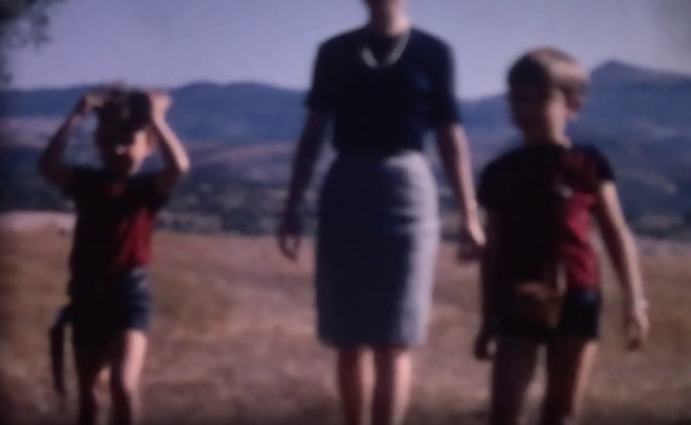
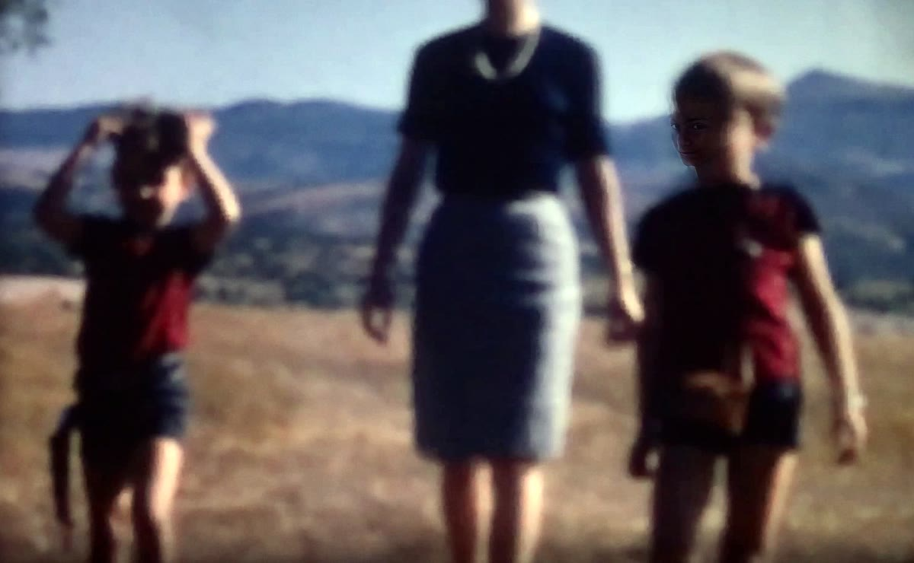

Limpia el polvo y las rayas, elimina el temblor y el parpadeo, recupera el color y, si quieres, aumenta la resolución y la fluidez con inteligencia artificial. Todo en tu ordenador: tus películas familiares no salen de casa.


OriginalRestauradoArrastra el control (o usa las flechas del teclado) para comparar. Fotogramas reales de una película Super 8 procesada con la app.
La app mide primero cada defecto y ajusta los filtros a tu película. No hace falta saber de vídeo.
Sigue cientos de puntos entre fotogramas y compensa el baile de la película en la ventanilla, conservando los movimientos de cámara.
Iguala el brillo que oscila de un fotograma a otro, también cuando el centro de la imagen brilla más que las esquinas.
Detecta las motas que aparecen en un solo fotograma y las rellena con la imagen real de los fotogramas vecinos.
Reduce el ruido promediando fotogramas alineados y devuelve una parte del grano para que siga pareciendo cine.
Corrige la dominante rojiza o magenta de la película envejecida y ajusta el contraste escena por escena.
Opcionalmente, amplía la imagen con IA (Real-ESRGAN) y crea fotogramas intermedios (RIFE) para verla fluida en una tele moderna.
Limpio y estable, sin inventar nada: todo lo que se ve estaba en la película. Se guarda sin pérdida de calidad, para archivar.
A partir del máster, más resolución y más fluidez para verla en pantalla grande. Va en un archivo aparte porque la IA estima detalle.
Sí, en cualquier PC con Windows reciente. No hace falta tarjeta gráfica: sin ella todo funciona igual, solo que más despacio. La app detecta sola lo que tienes y se adapta.
| Mínimo | Recomendado | |
|---|---|---|
| Sistema | Windows 10 de 64 bits | Windows 11 |
| Gráfica | No necesaria | NVIDIA RTX con 8 GB o más |
| Memoria | 8 GB | 16 GB |
| Disco libre | 3 GB + 10 veces el vídeo | SSD con 50 GB |
| Tiempo por bobina | De 30 min a varias horas | Minutos a 1 hora |
D:\Restaurador_Super8. Mejor fuera del Escritorio si lo tienes sincronizado con OneDrive.No. Todo el proceso ocurre en tu ordenador. La app solo usa Internet la primera vez, para descargar sus componentes.
El máster restaurado no usa IA generativa: solo limpia y estabiliza lo que ya estaba. La copia mejorada sí estima detalle para ampliar la imagen; por eso se guarda aparte y puedes decidir cuánto peso darle.
La calidad final depende sobre todo de cómo se digitalizó la película. La app mide cuánto detalle real contiene y no amplía más de lo que tiene sentido. Si una bobina es muy valiosa, un reescaneado profesional a 2K o 4K es lo que más mejora el resultado.
Los habituales: MP4, MOV, AVI, MKV, DV… Entrega un máster sin pérdida (MKV) y una copia MP4 que se reproduce en cualquier tele, ordenador o móvil.
Es el aviso normal para programas descargados que no están firmados por una empresa. El ZIP solo contiene scripts y código Python que puedes abrir y revisar con el Bloc de notas.
Depende del equipo y de lo que pidas. Con «Analizar y proponer parámetros» indicas el tiempo disponible (20 minutos, una hora, toda la noche…) y la app elige la mejor calidad que cabe en ese tiempo.